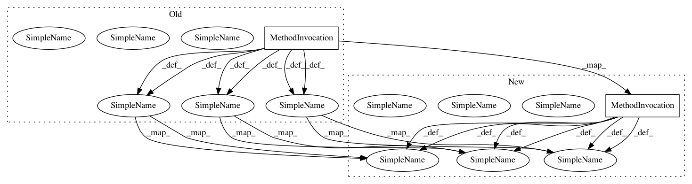

504f7b18fe1037bf79da0119329f2aafdee4703a,thinc/initializers.py,,normal_init,#,52
Before Change
def normal_init(ops: Ops, shape: Shape, *, fan_in: int = -1) -> FloatsXd:
if fan_in == -1:
fan_in = shape[1]
scale = ops.xp.sqrt(1.0 / fan_in)
size = int(ops.xp.prod(ops.xp.asarray(shape)))
inits = numpy.random.normal(scale=scale, size=size).astype("float32")
inits = ops.reshape_f(inits, shape)
return ops.asarray_f(inits)
After Change
def normal_init(ops: Ops, shape: Shape, *, fan_in: int = -1) -> FloatsXd:
if fan_in == -1:
fan_in = shape[1]
scale = float(ops.xp.sqrt(1.0 / fan_in))
size = int(ops.xp.prod(ops.xp.asarray(shape)))
inits = numpy.random.normal(scale=scale, size=size).astype("float32")
inits = ops.reshape_f(inits, shape)
return ops.asarray_f(inits)
In pattern: SUPERPATTERN
Frequency: 1
Non-data size: 2
Instances
Project Name: explosion/thinc
Commit Name: 504f7b18fe1037bf79da0119329f2aafdee4703a
Time: 2020-02-18
Author: adrianeboyd@gmail.com
File Name: thinc/initializers.py
Class Name:
Method Name: normal_init